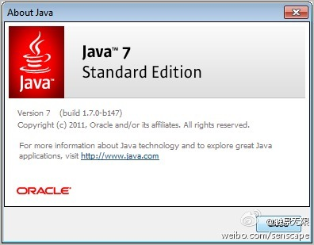

也有人认为是最重要的是JDK1.2, 是Java能够流行的关键发布. 对Java语言来说, J2SE 5是改变最大的一个发布. //@赵晓锋:应该是J2SE 5.0(tiger)，当时我在j2se china team，tiger中有generic,annotation,autobox,for in,还有很多nio和concurrent提升。java6的script engine也算一个。当然，最具时代意义的
@触景无限:
Oracle今天已经放出Java 7正式版的二进制安装包，这不是小升级，而是Java诞生以来最大的改进，增加了闭包等很多有用的特性。最新版的Netbeans7已经支持Java7。
- 